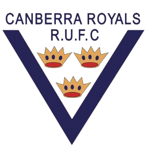
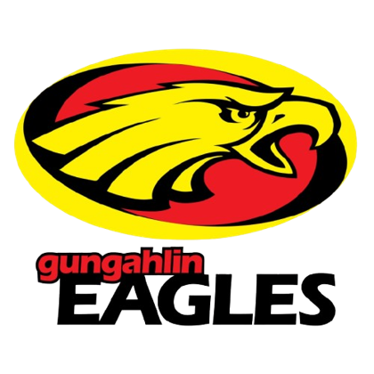

Competition centre
ACT John I Dent Cup
6 ranked clubs in this competition.
| Global rank | Club | P | W | D | L | Global Elo |
|---|---|---|---|---|---|---|
| 4 | TUTuggeranong Vikings | 17 | 15 | 0 | 2 | 1721.5 |
| 25 |  Canberra Royals | 18 | 11 | 0 | 7 | 1562.1 |
| 34 | QUQueanbeyan Whites | 17 | 10 | 0 | 7 | 1525.0 |
| 41 | UNUni-North Owls | 15 | 5 | 0 | 10 | 1466.1 |
| 42 |  Gungahlin Eagles | 16 | 7 | 0 | 9 | 1463.0 |
| 63 | WEWestern Districts Lions | 15 | 1 | 0 | 14 | 1262.4 |